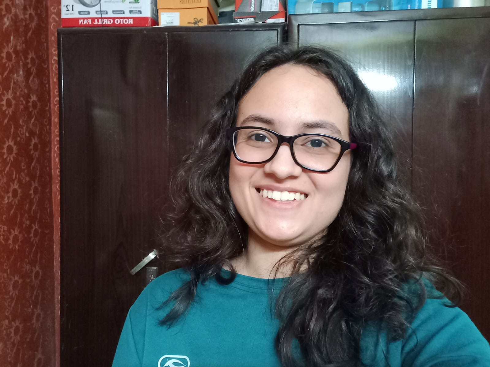

WELCOME TO MY SPACE
So, giving a back story for myself, since school, I knew I liked the domain of science and technology. Whether it was an olympiad, a workshop or a competition, I actively participated in the tech related events. Everyone around me encouraged me and motivated me to pursue my passion in this. Fast forwarding to the first year of my bachelors where I learned about artificial intelligence, made a few projects and fell in the love with it
The possibility of creating something useful from data (i.e plain numbers and simple text) and solving a real world problem using artificial intelligence amazes me. I love expanding my knowledge by reading articles on whats happening each day. I like building relevant projects from scratch and the research work that goes behind it. Talking with people helps me gain new insights and better ways of approaching a problem.
In my free time, I like watching shows(bollywood, hollywood, korean, japanese and all types), dancing and playing video games to refresh my mind. My creative side includes writing poetry, as for me, it is a powerful way to express emotions and events in a few words.
Creative Learner | Good at time management | Disciplined | Enthusiastic individual
Education
Bachelors of technology at Indira Gandhi Delhi Technical University
- Computer Science with Artificial intelligence
- Cummulative GPA(current): 7.36
High School at DAV Public School, Pitampura
Internships
- CoRover Private Limited | New Delhi
-
- AI/ML intern
- June 2024 - July 2024
- Remote intern
-
Well, this was my first internship experience so it was very exciting for me. I got to meet people who taught me how AI is actually used in the real world and learned a lot from them. I worked in the natural language processing domain. I implemented voice cloning, text to speech & vice versa, made a project.
- AlgoSoft | New Delhi
-
- August 2024 - September 2024
- Hybrid
-
In this internship, I did task like API handling, web scraping, front end designing. With the help of others, I learned alot in the domain of web development.